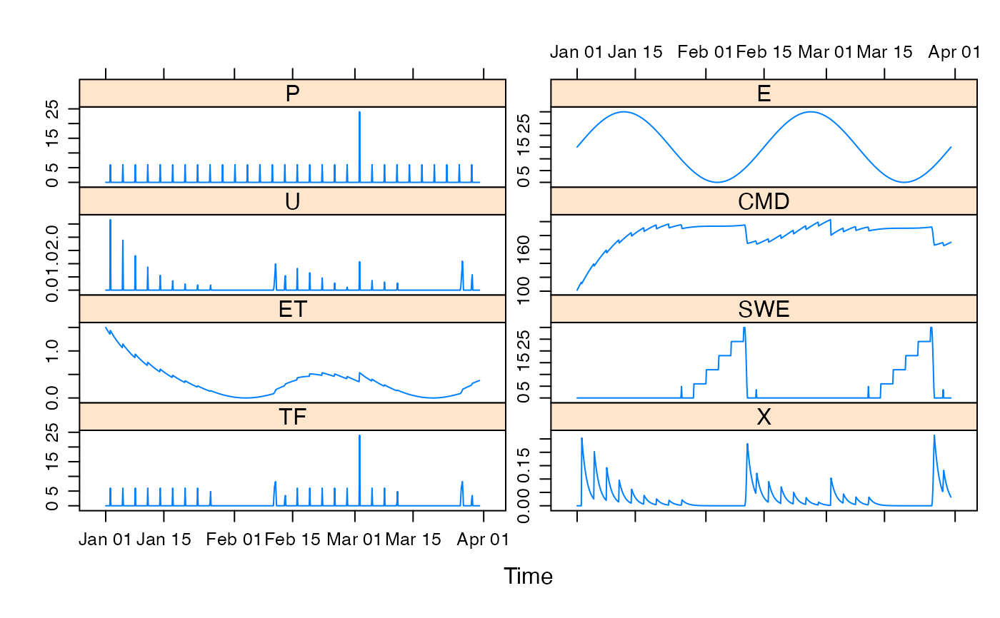
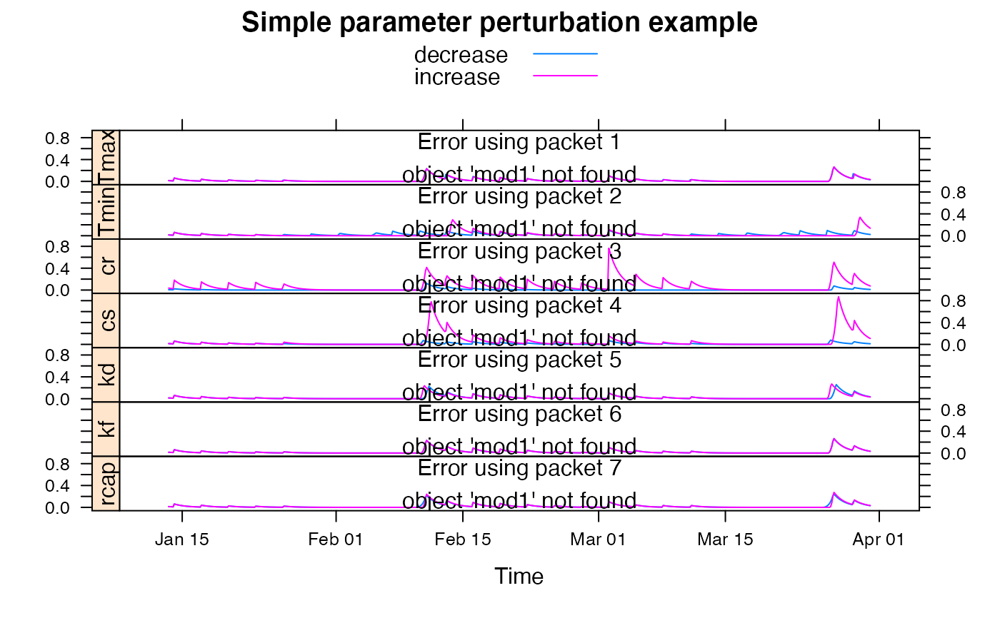

Simple degree day factor snow model coupled with IHACRES CMD soil moisture model.
snow.sim( DATA, Tmax, Tmin, kd, kf, rcap, Tmelt = Tmin, cr = 1, cs = 1, LSWE_0 = 0, ISWE_0 = 0, ..., return_state = FALSE )
| DATA | a
|
|---|---|
| Tmax | temperature threshold for rain, all rain is liquid above this threshold. |
| Tmin | temperature threshold for rain, all rain is snow below this threshold. |
| kd | degree day factor for snowmelt. |
| kf | degree day factor for freezing. |
| rcap | retention parameter for liquid water capacity of snowpack. |
| Tmelt | temperature threshold for snowmelt and freezing in the snowpack. |
| cr | correction factor for rainfall. |
| cs | correction factor for snowfall. |
| LSWE_0, ISWE_0 | initial values of state variables. |
| ... | parameters for the IHACRES.CMD.model. |
| return_state | to return state variables as well as the effective rainfall. |
snow.sim returns the modelled time series of effective
rainfall, or if return_state = TRUE, a multi-variate time series with
named columns U (effective rainfall), SWE (snow water
equivalent) and TF, as well as the CMD state variables.
SWE snow water equivalent
ISWE water equivalent of ice in the snowpack
LSWE liquid water retained in the snowpack
Kokkonen T., Jakeman A.J, Koivusalo.H, Norton.J.: COMPUTATIONAL METHODS FOR WATER RESOURCE ASSESSMENTS: AN EXERCISE KIT Educational Series on Modelling and Software iEMSs International Modelling and Software Society Available through www.iemss.org
hydromad(sma = "snow") to work with models as objects
(recommended).
Coded in R by Jarkko Koskela @tkk.fi 2010-02-26.
Converted to C by Felix Andrews felix@nfrac.org.
#> List of 1 #> $ snow:List of 10 #> ..$ Tmax: num [1:2] 0 2 #> ..$ Tmin: num [1:2] -1 1 #> ..$ cr : num [1:2] 0.8 2 #> ..$ cs : num [1:2] 0.8 2 #> ..$ kd : num [1:2] 2 5 #> ..$ kf : num [1:2] 0 2 #> ..$ rcap: num [1:2] 0 1 #> ..$ f : num [1:2] 0.01 3 #> ..$ e : num [1:2] 0.01 1.5 #> ..$ d : num 200#> #> Hydromad model with "snow" SMA and "expuh" routing: #> Start = 2000-01-01, End = 2000-03-31 #> #> SMA Parameters: #> lower upper #> Tmax 0.00 2.0 #> Tmin -1.00 1.0 #> cr 0.80 2.0 #> cs 0.80 2.0 #> kd 2.00 5.0 #> kf 0.00 2.0 #> rcap 0.00 1.0 #> f 0.01 3.0 #> e 0.01 1.5 #> d 200.00 200.0 (==) #> Routing Parameters: #> NULL## simulate with some arbitrary parameter values mod1 <- update(mod0, Tmax = 15, Tmin = 5, cr = 1, cs = 1, kd = 3, kf = 1, rcap = 0.5, d = 200, f = 0.5, e = 0.1, tau_s = 10 ) ## plot results with state variables testQ <- predict(mod1, return_state = TRUE) xyplot(cbind(HydroTestData[, 1:2], snow = testQ))## show effect of increase/decrease in each parameter parlist <- list( Tmax = c(10, 20), Tmin = c(0, 10), cr = c(0.5, 2), cs = c(0.5, 2), kd = c(2, 5), kf = c(0, 2), rcap = c(0, 1) ) parsims <- mapply( val = parlist, nm = names(parlist), FUN = function(val, nm) { lopar <- min(val) hipar <- max(val) names(lopar) <- names(hipar) <- nm fitted(runlist( decrease = update(mod1, newpars = lopar), increase = update(mod1, newpars = hipar) )) }, SIMPLIFY = FALSE ) xyplot.list(parsims, superpose = TRUE, layout = c(1, NA), strip = FALSE, strip.left = TRUE, main = "Simple parameter perturbation example" ) + latticeExtra::layer(panel.lines(fitted(mod1), col = "grey", lwd = 2))